Graph Problems : Hard Problems
Dealing with NP-completeness.
Clique
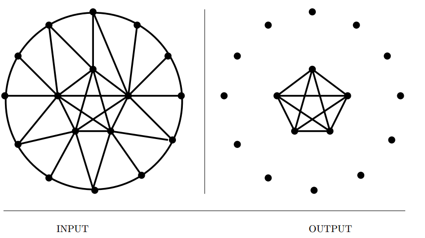
Input description: A graph $G = (V,E)$.
Problem description: What is the largest $S \subset V$ such that for all $x, y \in S,, (x, y) \in E$?
- Finding the maximum clique is NP-complete, as hard as it gets.
- And, provably hard to approximate to withing the factor of $n^{1/2-\epsilon}$.
- What can we do about it?
- Will a maximal clique suffice? This is a clique that can not be enlarged by adding another vertex. Can be done in $O(n+m)$
- What if I will settle for a large dense subgraph? Can be done in $O(n+m)$.
- What if the graph is planar? Cannot have a clique of size larger than 4.
- For an exact solution, use an exhaustive search with backtracking and pruning.
- For an efficient solution, use randomized techniques such as simulated annealing.
- Implementations :
Cliquerfor C. - Related : Independent set, vertex cover.
Independent Set
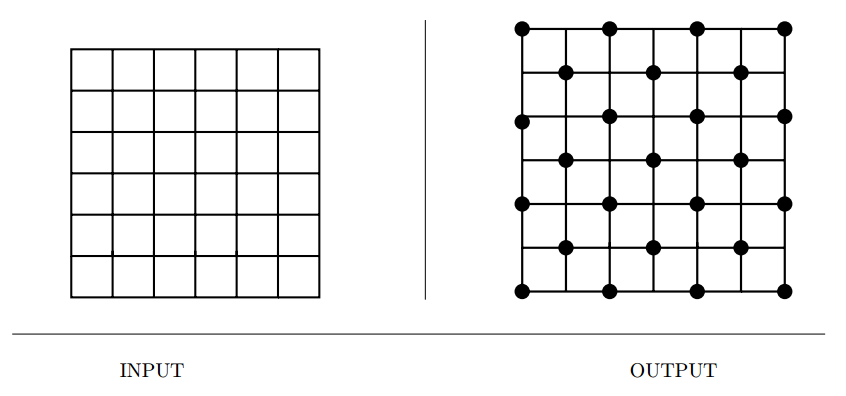
Input description: A graph $G = (V,E)$.
Problem description: What is the largest subset $S$ of vertices of $V$ such that for
each edge $(x,y) \in E$, either $x \notin E$ or $y \notin E$?
- Choose mutually separated vertices.
- Closely related to clique(on complement graph $G'$) and vertex coloring(each color class defines an independent set)
- Randomized algorithms work well.
- Simple linear time algorithms are available for trees.
- Related : Clique, vertex coloring, vertex cover.
Vertex Cover
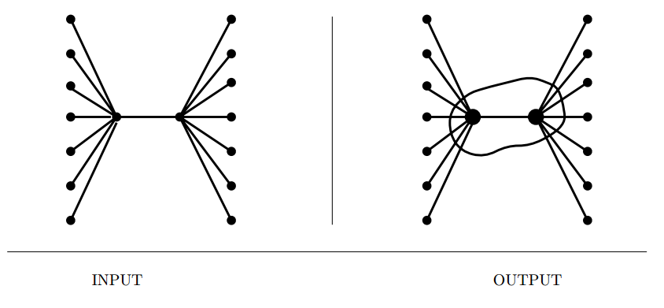
Input description: A graph $G = (V,E)$.
Problem description: What is the smallest subset of $S \subset V$ such that each edge
$(x, y) \in E$ contains at least one vertex of $S$?
- Special case of set cover and relatively lightweight.
- Closely related to independent set : if $S$ is the vertex cover, $V-S$ must be an independent set.
- Simple heuristics perform well.
- Related : Independent set, set cover
Travelling Salesman Problem
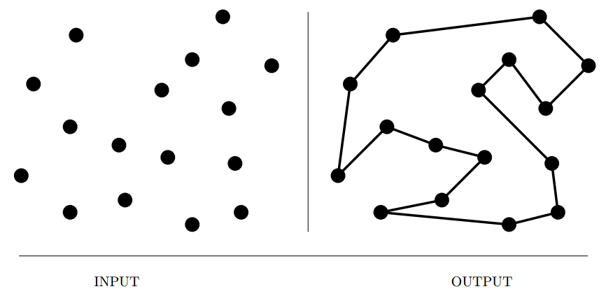
Input description: A weighted graph $G$.
Problem description: Find the cycle of minimum cost, visiting each vertex of $G$
exactly once.
- The most notorious NP-complete problem, mostly because of its general nature and explainability.
- Several issues arise in TSPs,
- Is the graph unweighted? The problem reduces to finding a Hamiltonian cycle.
- Does your input satisfy the triangle inequality? TSP heuristics work much better if they do.
- Are you given $n$ points as input or a weighted graph? Geometric instances are easier to represent, eliminating the need for $n \times n$ matrix, satisfy triangle inequality and we can also take advantage of geometric data structures like kd-trees to speed up our searches.
- Can you visit a vertex more than once? Things become simpler.
- Is your distance function symmetric? Asymmetric problem is much harder to approximate.
- How important is it to find the optimal tour? Heuristics often suffice.
- Choice of heuristics,
- Minimum Spanning Trees,
- Incremental insertion methods
- K-optimal tours
- Implementations : Concorde
- Related : Hamiltonian cycle, minimum spanning tree, convex hull
Hamiltonian Cycle
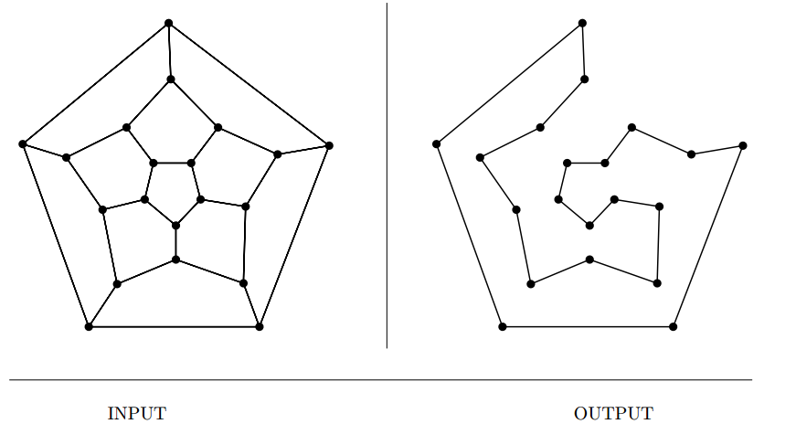
Input description: A graph $G = (V,E)$.
Problem description: Find a tour of the vertices using only edges from $G$, such
that each vertex is visited exactly once.
- A special case of TSP.
- Several possible lines of attack,
- Is there a serious penalty for visiting vertices more than once? We can find better heuristics if not.
- Am I seeking the longest path in a directed graph (DAG)? Linear time solutions exist.
- Is my graph dense? Sufficiently dense graphs almost always contain a Hamiltonian cycle.
- Are you visiting all the vertices or all the edges?
- Backtracking with pruning is the only possible correct solution.
- Related : Eulerian cycle, travelling salesman
Graph Partition
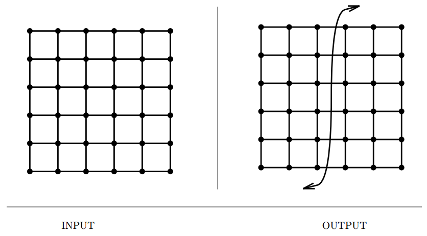
Input description: A (weighted) graph $G = (V,E)$ and integers $k$ and $m$.
Problem description: Partition the vertices into $m$ roughly equal-sized subsets
such that the total edge cost spanning the subsets is at most $k$.
- Graph partitioning arises in many divide-and-conquer algorithms.
- Graph partition also arises when we need to cluster the vertices into logical components.
- It has different flavors,
- Minimum cut set
- Graph partition, equal sized pieces.
- Maximum cut, (NP-complete)
- Heuristics with randomization, particularly simulated annealing are almost certain to produce good results. Apply recursively for more than two partitions.
- Related : Edge/vertex connectivity, network flow
Vertex Coloring
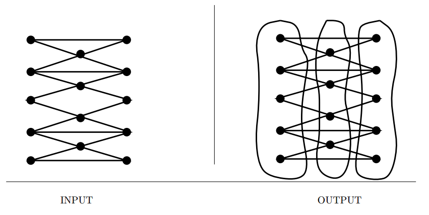
Input description: A graph $G = (V,E)$.
Problem description: Color the vertices of $V$ using the minimum number of
colors such that $i$ and $j$ have different colors for all $(i,j) \in E$.
- Register allocation in compiler optimization is a canonical application of coloring.
- The smallest number of colors sufficient to vertex-color a graph is its chromatic number.
- Special cases of interest,
- Can I color the graph using only two colors? i.e. a bipartite graph. Checking this is easy.
- Is the graph planar, or are all vertices of low degree? Every planar graph can be vertex colored using at most four distinct colors. Four coloring is easy. three coloring is NP-complete.
- Is this an edge coloring problem? Edge coloring is relatively easy to approximate.
- Heuristics using incremental methods work very well.
- Simulated annealing is likely to be even more effective.
- Related : Independent set, edge coloring
Edge Coloring
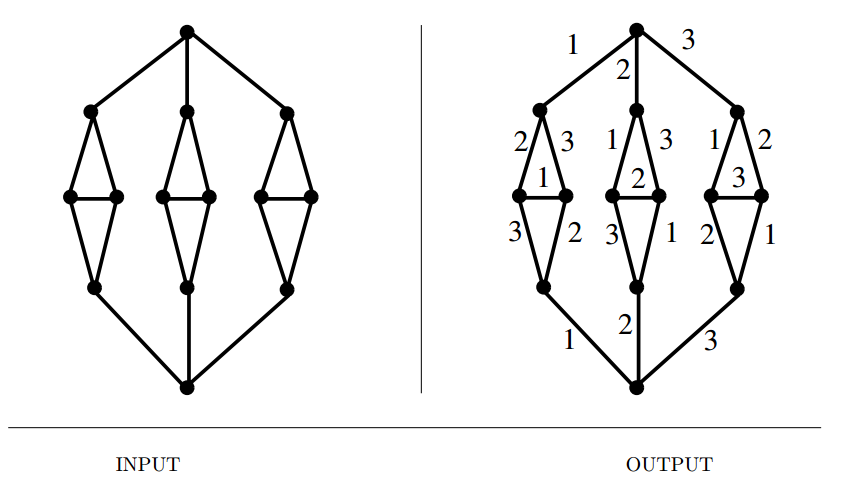
Input description: A graph $G = (V,E)$. Problem description: What is the smallest set of colors needed to color the edges of $G$ such that no two same-color edges share a common vertex?
- The National Football League solves such an edge-coloring problem each season to make up its schedule.
- The minimum number of colors needed to edge color a graph is called its edge-chromatic number or chromatic index.
- Related : Vertex coloring, scheduling
Graph Isomorphism
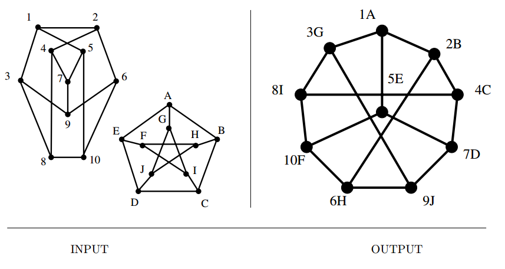
Input description: Two graphs, $G$ and $H$.
Problem description: Find a (or all) mapping $f$ from the vertices of $G$ to the
vertices of $H$ such that $G$ and $H$ are identical; i.e. , $(x,y)$ is an edge of $G$ iff
$(f(x),f(y))$ is an edge of $H$.
- Pattern recognition reduces to this sometimes, identifying molecules is an isomorphism testing problem.
- Automorphism provides a great deal of information about symmetries in the graph.
- Several variants arise in practice,
- Is graph $G$ contained in graph $H$? Subgraph isomorphism. These can be even harder than vanilla graph isomorphism.
- Are your graphs labeled or unlabeled? Use pruning extensively.
- Are you testing whether two trees are isomorphic? Faster algorithms exists for trees and planar graphs.
- How many graphs do you have? Indexing can help asymptotically.
- No polynomial time algorithm is known, but neither is it known to be NP-complete.
- Backtracking and pruning is the way to go.
- More efficient approach, partition the vertices into equivalence classes on the basis of,
- Vertex degree,
- Shortest path matrix
- Counting k-length paths
- Implementations : Nauty (C), VFLib, GraphGrep, LEDA.
- Related : Shortest path, string matching
Steiner Tree
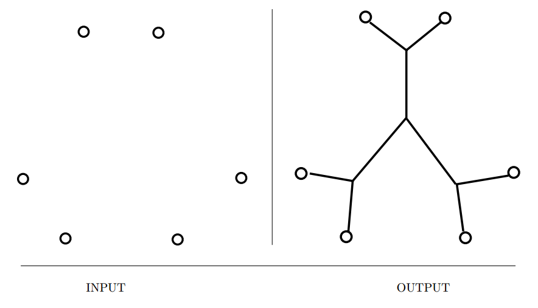
Input description: A graph $G = (V,E)$. A subset of vertices $T \in V$ .
Problem description: Find the smallest tree connecting all the vertices of $T$.
- The Steiner tree problem is distinguished from the minimum spanning tree (MST) problem in that we are permitted to construct or select intermediate connection points to reduce the cost of the tree.
- Steiner tree construction include,
- How many points do you have to connect?
- Is the input a set of geometric points or a distance graph?
- Are there constraints on the edges we can use?
- Do I really need an optimal tree? Its a hard problem! Use exhaustive search with extensive pruning.
- How can I reconstruct Steiner tree vertices I never knew about?
- Find an MST and improve it.
- Alternatively, start with shortest path for two terminals, for the remaining terminals, find the shortest path to intermediate vertices on the path and add this path to the tree.
- Related : Minimum spanning trees, shortest path
Feedback Edge/Vertex Set
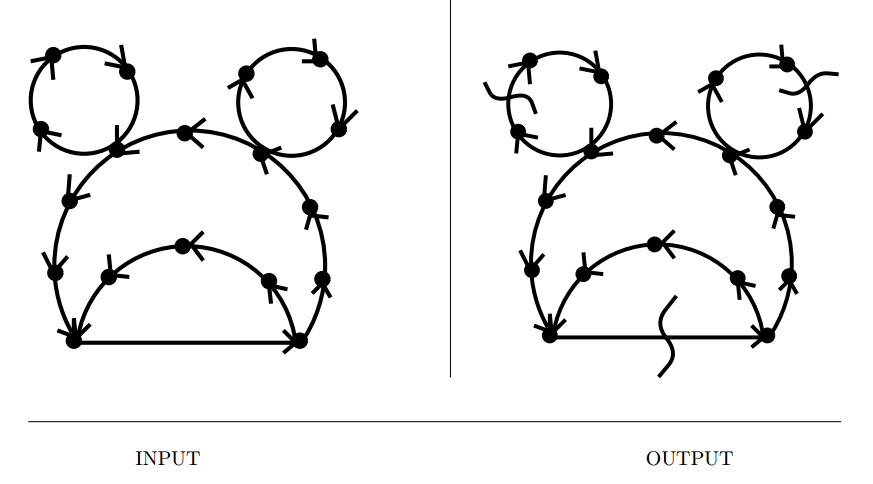
Input description: A (directed) graph $G = (V,E)$.
Problem description: What is the smallest set of edges $E'$ or vertices $V'$ whose
deletion leaves an acyclic graph?
- Feedback set problems arise because many things are easier to do on directed acyclic graphs (DAGs) than general digraphs.
- For a scheduling problem, if there are cyclic constraints,
- In the feedback edge (or arc) set problem, we drop individual precedence constraints.
- In the $feedback vertex$ set problem, we drop entire jobs and all constraints associated with them.
- Similar considerations are involved in eliminating race conditions from electronic circuits.
- Also called maximum acyclic subgraph problem.
- Issues in feedback set problem,
- Do any constraints have to be dropped? Nothing to delete if its already a DAG. But if there is, the problem is NP-complete.
- How can I find a good feedback edge set?
- How can I get a good feedback vertex set?
- What if I want to break all cycles in an undirected graph?
- Implementation : GRASP, GOBLIN , Stanford GraphBase.
- Related : Bandwidth Reduction, topological sorting, scheduling